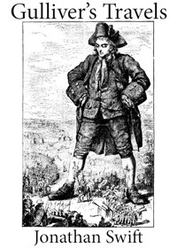
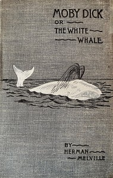
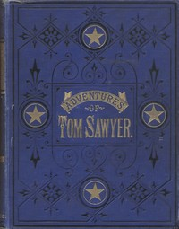
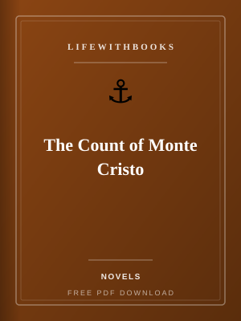
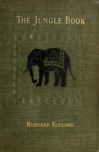
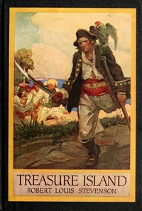

Gulliver's Travels
Swift's satirical voyages to lands of tiny people, giants and talking horses.
Read MoreAdventure literature is the original page-turner — the genre that kept children reading by firelight and adults up far past midnight, the fiction that proved reading could be as exciting as anything else a person might do with their time. The adventure books in this category are among the most joyfully readable texts in the entire Western tradition, and they are all available on LifeWithBooks as free PDF downloads. Consider what this library contains: Jules Verne's Twenty Thousand Leagues Under the Sea, which imagined submarine travel decades before it existed, and Around the World in Eighty Days, in which Phileas Fogg's improbable journey around the globe against time generates one of the great narrative engines in fiction. Robert Louis Stevenson's Treasure Island, which invented every pirate cliché we know and still outperforms all its imitations. H. Rider Haggard's King Solomon's Mines, the founding text of the lost-world adventure genre. Arthur Conan Doyle's The Lost World, where a brilliant, infuriating professor leads an expedition to a South American plateau still inhabited by dinosaurs. And the complete Sherlock Holmes canon — four novels and five story collections of the most satisfying detective fiction ever written. Adventure fiction has always served multiple functions beyond entertainment. Stevenson's Jim Hawkins navigates not just a physical island but the much harder terrain of moral ambiguity, discovering that adults he trusted are not what they seemed and that treasure comes at costs its seekers did not anticipate. Verne's Captain Nemo is among the most complex figures in nineteenth-century fiction: simultaneously visionary and tyrannical, generous and vengeful, a man whose genius cannot be separated from his damage. Conan Doyle's Holmes is a sustained meditation on the relationship between reason and emotion, observation and inference, capability and loneliness. These books are ideal for reluctant readers, for English learners building reading stamina, for children ready for their first unabridged classic, and for any adult who simply wants the pleasure of a story that moves. Download one tonight and discover why these titles have been continuously in print for over a century.
Adventure books are among the most forgiving classics to approach. Unlike dense psychological novels or heavily symbolic literary fiction, adventure stories carry you forward through plot momentum — you read to find out what happens next, which is the oldest and most reliable reading motivation. Allow yourself to be pulled by the story rather than pausing too often to analyse. That said, the best adventure readers also notice the craft. Pay attention to how Stevenson controls pace — the way he slows a chapter just before a revelation, or accelerates through action with short, punchy sentences. Notice how Verne builds his worlds through accumulated scientific detail, making the impossible feel plausible through specificity. Observe how Conan Doyle uses Watson not just as a narrator but as a proxy for the reader's confusion, ensuring that Holmes's deductions feel miraculous rather than arbitrary. If you are reading with children, adventure books are ideal for read-alouds. The episodic structure of Sherlock Holmes stories makes each one a natural read-in-one-sitting session. Treasure Island's chapters are short and punchy enough for young attention spans, and its moral complexity provides rich material for discussion. Aesop's Fables and Grimms' Fairy Tales in our kids category pair well with adventure fiction for children just transitioning to chapter books. For English learners, adventure books are excellent learning tools because the language serves the story rather than drawing attention to itself. Vocabulary is contextualised in action — you understand what 'careened' means because the ship is doing it — and sentence structure is varied and natural rather than pedagogically simplified.

Swift's satirical voyages to lands of tiny people, giants and talking horses.
Read More

Mark Twain's timeless tale of boyhood mischief, treasure and adventure along the Mississippi.
Read More
Dumas's sweeping epic of wrongful imprisonment, hidden treasure and elaborate revenge.
Read More
Kipling's stories of Mowgli the man-cub raised by wolves in the Indian jungle.
Read MoreDumas's swashbuckling epic of d'Artagnan, Athos, Porthos and Aramis in seventeenth-century France.
Read More
Robert Louis Stevenson's timeless pirate adventure with Jim Hawkins, Long John Silver and a hunt for
Read More